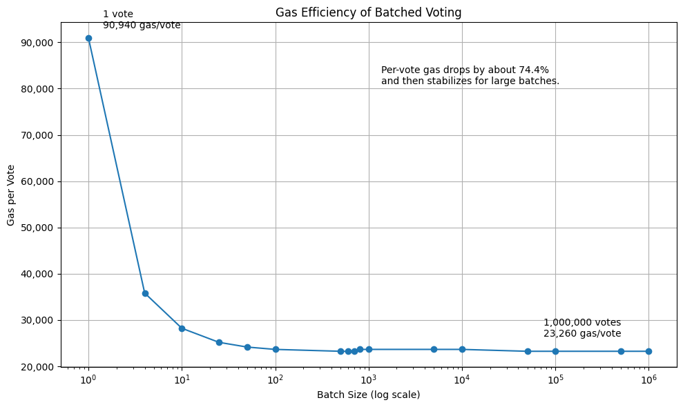

Optimising Blockchain Voting with Zero-Knowledge Rollup Layer 2
Blockchain Voting with Zero-Knowledge Rollup
Summary
This project explores how blockchain voting can be improved using Zero-Knowledge Proofs and a zk-Rollup Layer-2 architecture. It addresses three key challenges in blockchain elections: scalability, transaction cost, and voter privacy. By processing votes off-chain and submitting validity proofs to Ethereum Layer 1, the system improves efficiency and reduces cost. Zero-Knowledge Proofs also help protect voter anonymity, prevent double voting, and support verifiable election results.
The Problem
While blockchain provides an immutable and transparent ledger, using it directly for voting introduces several significant challenges that must be addressed before real-world adoption is viable.
Scalability Limitations
Public blockchains have limited throughput. Recording every individual vote as an on-chain transaction severely constrains the number of voters the system can support in a reasonable time-frame.
High Transaction Costs
Each on-chain transaction incurs gas fees. In a large election, the cumulative cost of recording thousands or millions of votes can become prohibitively expensive.
Privacy Concerns
Blockchain's inherent transparency means that vote data, if stored directly, can potentially be linked to voters — undermining the secret ballot principle essential to democratic elections.
Transparency & Verifiability
Election systems must allow independent verification of results without compromising individual voter privacy — a delicate balance that traditional systems struggle to achieve.
Proposed Solution
The proposed approach combines zero-knowledge proofs with a zk-rollup-inspired off-chain/on-chain architecture to solve the scalability, cost, and privacy challenges simultaneously.
Voters generate zero-knowledge proofs using Circom circuits and SnarkJS that attest to the validity of their vote — confirming eligibility and choice — without revealing any identifying information.
These proofs are processed off-chain in batches, significantly reducing the number of on-chain transactions. A batch proof is then submitted to an Ethereum Solidity smart contract, which acts as a verifier.
The smart contract validates the aggregated proof on-chain, updating the election state at a fraction of the cost. This approach ensures that the blockchain serves as a trust anchor — guaranteeing integrity without bearing the full computational load.
System Architecture
The system follows a two-layer zk-Rollup design. Layer 1 (Ethereum) anchors election integrity, while Layer 2 handles vote processing off-chain through a three-phase privacy-preserving protocol.
- Secret key
Skey - Merkle path (sibling hashes)
- Random nonce
R
Prove( Skey ∈ MerkleTree )
Voter proves membership in the eligibility Merkle tree without revealing which leaf they occupy.
- Nullifier:
H(Skey ‖ ElectionID) - ZKPeligibility
The nullifier is a one-way hash — it prevents double-voting but cannot be linked back to the voter's identity.
- Vote choice
B(plaintext ballot) - Encryption randomness
r
C = Enc(B, r) → ZKPballot
The ballot is encrypted and a ZK proof attests the ciphertext encodes a valid candidate — without revealing the vote.
- Encrypted ballot
C - Nullifier &
ZKPballot
Collects N encrypted ballots, generates a single
ZKPbatch proving all votes valid, and submits the batch proof + state root
to L1.
Ctally = C1 ⊕ C2 ⊕ … ⊕ CN
Encrypted votes are combined without decryption using the additive homomorphic property of ElGamal.
D(Ctally) → Result
t-of-n trustees each contribute a decryption share. Only the aggregate tally is revealed — individual votes remain hidden.
ZKPdec
Each trustee publishes a ZK proof that their decryption share is correct, preventing malicious decryption without revealing secret key shares.
Key Features
The system incorporates several critical features designed to ensure a secure, private, and cost-effective election process.
Voter Privacy
Zero-knowledge proofs ensure that individual votes remain completely confidential, preserving the secret ballot principle.
Double-Vote Prevention
Cryptographic nullifiers and on-chain tracking guarantee that each eligible voter can cast exactly one vote.
Verifiable Results
Anyone can independently verify the election outcome by checking the on-chain proofs, without needing to trust any authority.
Smart Contract Verification
Solidity-based verifier contracts on Ethereum validate ZK proofs on-chain, acting as an immutable trust anchor.
Reduced On-Chain Cost
Off-chain batch processing and rollup-style aggregation dramatically lower gas fees compared to recording every vote individually.
Secure Election Flow
End-to-end cryptographic integrity ensures that vote data cannot be tampered with at any stage of the election process.
Technology Stack
The project leverages a modern stack of blockchain and cryptographic tools specifically chosen for building zero-knowledge proof systems on Ethereum.
 Ethereum
Ethereum
 Solidity
Solidity
 Circom
Circom
 SnarkJS
SnarkJS
 Smart Contracts
Smart Contracts
 Zero-Knowledge Proofs
Zero-Knowledge Proofs
Key Results
The evaluation demonstrates that the proposed architecture achieves meaningful improvements across the core objectives for blockchain-based electronic voting.
Lower Cost
Batch proof verification significantly reduces per-vote gas expenditure compared to individual on-chain transactions.
Better Privacy
ZK proofs protect voter identity and vote content, achieving a strong privacy guarantee while allowing result verification.
Improved Scalability
Off-chain processing and proof aggregation enable the system to handle a substantially larger number of voters per election cycle.
Trustworthy Verification
On-chain proof validation provides a transparent and tamper-proof mechanism for anyone to independently confirm election integrity.
Per-vote gas cost falls sharply as batch size grows on a log scale, then levels off for very large batches — consistent with amortising a fixed verification cost across many votes.

Takeaway: Per-vote gas cost is optimised from about 90.9k gas for a single vote to roughly 23.2k–23.7k gas per vote in batched voting, with the efficiency plateau appearing at batch sizes of around 500 to 1,000,000 votes.
Future Directions
Several avenues for future improvement and extension have been identified to bring the system closer to production readiness.
Larger-Scale Performance Testing
Conduct stress tests with significantly larger voter pools to validate the system's behaviour under realistic election-scale loads.
Production-Level Deployment
Address deployment concerns such as gas optimisation, contract upgradeability, key management, and regulatory compliance.
Try more ZK Proof Systems
Explore alternative proof systems (e.g., PLONK, Halo2, STARKs) and different cryptographic primitives to compare performance, security assumptions, and suitability for the voting use case.